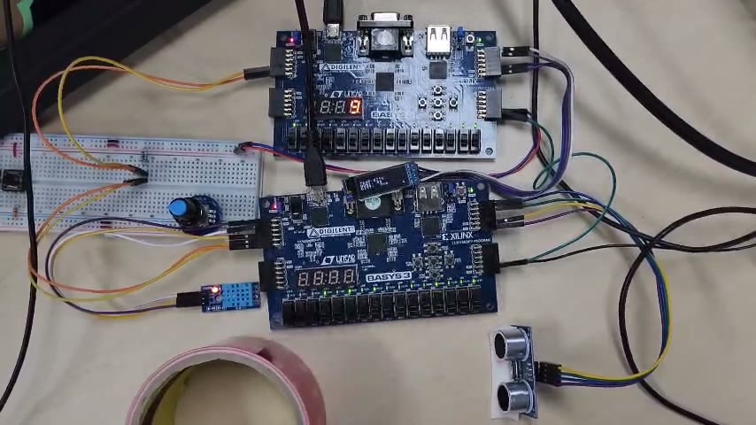
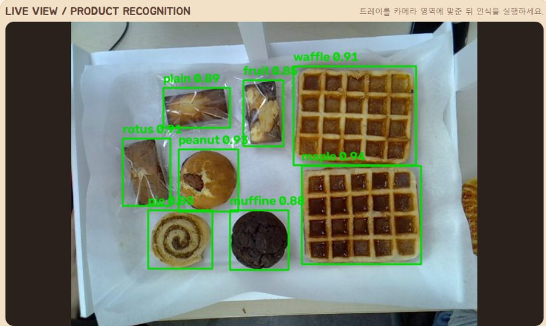
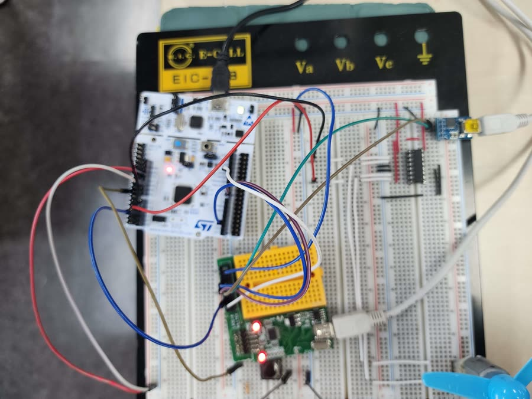
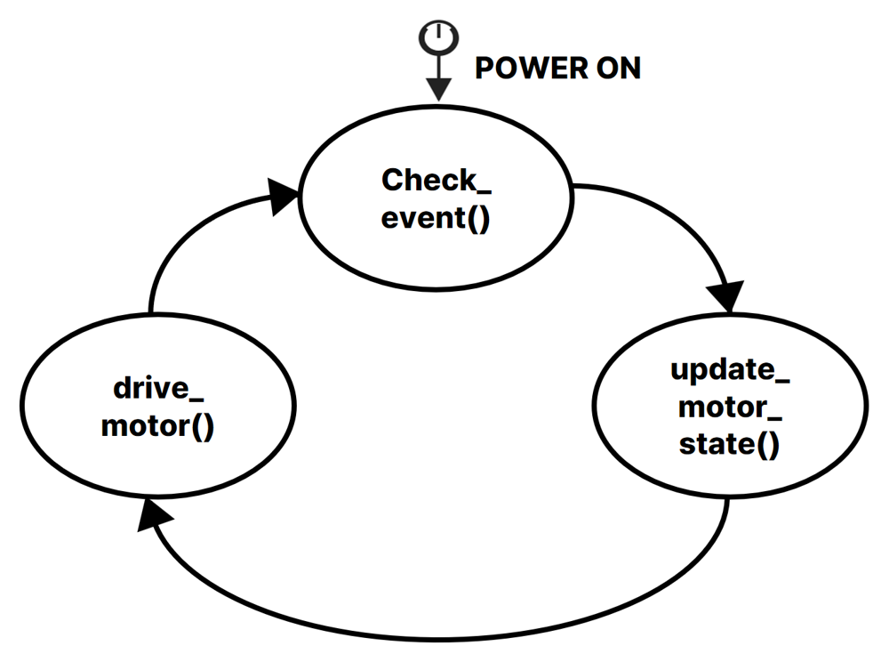
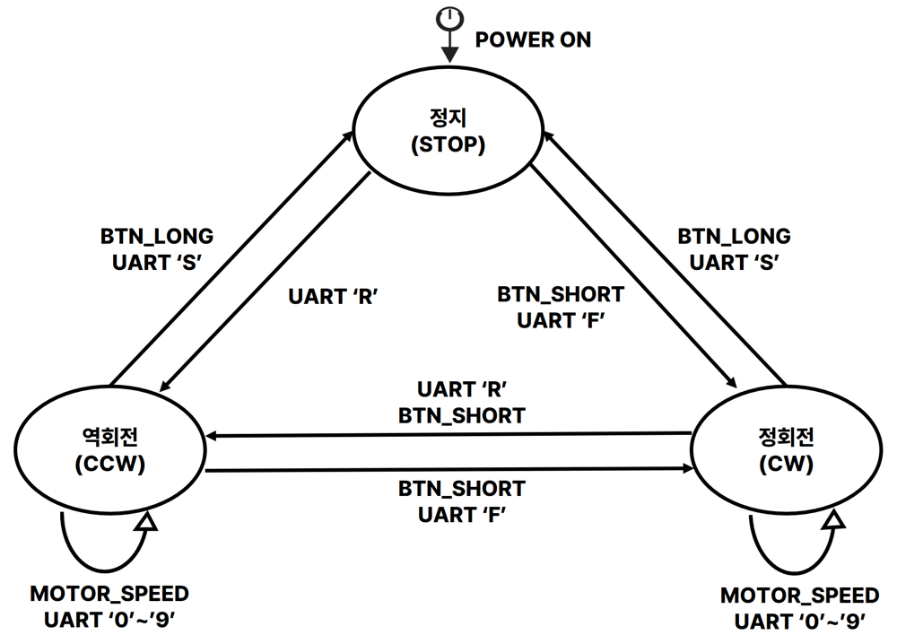
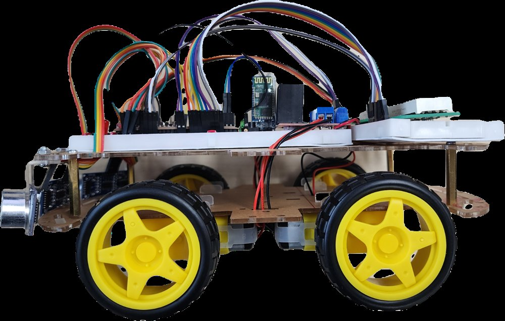

신유지
임베디드 펌웨어 개발자를 준비하고 있습니다.
대한상공회의소 서울기술교육센터 AI 시스템반도체 SW개발자 2기
프로젝트
태그를 클릭하면 해당 기술을 사용한 프로젝트를 모아볼 수 있습니다.

2026.11 · 팀 2인
FPGA I²C 센서 드라이버
Basys3 보드 두 개를 I²C로 연결해, Slave가 측정한 거리, 온습도를 Master가 읽어 FND, UART, OLED에 표시하는 RTL 설계
자세히

2026.11 · 팀 2인
FPGA I²C 센서 드라이버
Basys3 보드 두 개를 I²C로 연결해, Slave가 측정한 거리, 온습도를 Master가 읽어 FND, UART, OLED에 표시하는 RTL 설계
자세히
- 수행기간
- 2026.11
- 담당역할
- Master 보드 (팀 2인)
- 수행목표
- Basys3 보드 두 개를 I²C로 연결해, Slave가 측정한 거리, 온습도를 Master가 읽어 FND, UART, OLED에 표시
- 사용 기술
- Verilog, Vivado, Basys3, HC-SR04, DHT11, SSD1306 OLED
시스템 구성
- Slave: HC-SR04 거리, DHT11 온습도를 주기적으로 측정해 레지스터에 저장 (0x00 거리, 0x01 온도, 0x02 습도)
- Master: I²C(100kHz)로 Slave 레지스터를 하나씩 읽어 출력
- 보드 간 연결: JA1 SDA, JA2 SCL, 공통 GND, SDA/SCL 풀업 저항
주요 구현 내용 (Master)
- I²C로 레지스터 선택 후 1바이트씩 읽기
- FND에 거리, UART와 SSD1306 OLED에 거리/온도/습도 표시

- 수행기간
- 2026.10.08 ~ 10.13
- 담당역할
- DC 모터/서보 모터 커널 드라이버, 하드웨어 배선/전원 구성 (팀 4인)
- 수행목표
- 버튼, 엔코더, 모터, 서보, LED, 온도 센서, LCD를 각각 커널 드라이버로 만들고, 사용자 공간 앱으로 전원/풍량/자동 모드/회전/타이머 기능을 제어하는 선풍기 구현
- 사용 기술
- C, Linux Kernel Module(misc device, ioctl), Device Tree overlay, Jetson Orin Nano, L298N, SG90
시스템 구성
- 커널 드라이버 6개(입력, 모터, 서보, LED 바, BMP180, LCD) + 사용자 공간 제어 앱
- 각 주변장치를 /dev/fan_* 장치 파일로 제공, 앱은 ioctl/read로 제어
주요 구현 내용
- DC 모터: 20kHz PWM, 풍량 0~4단계를 듀티 0 / 45 / 60 / 80 / 100%로 출력, L298N 방향 GPIO 제어
- 서보: 각도 0~180°를 펄스 폭 500~2,500µs로 변환, 회전 ON 시 25ms마다 1°씩 30~150° 왕복
- 서보 PWM 주기는 Device Tree에서 5ms(200Hz)로 설정
문제 해결
- 모터 미동작: 보드 헤더 5V가 L298N 연결 시 약 1.5V로 하락 → 다른 보드와 비교해 보드 5V 출력 문제로 판단 → 외부 배터리로 모터 전원 분리, GND만 공통
- 신호 약함: 헤더 레벨 시프터가 약해 LED 직결 시 전압 하락, 엔코더 입력 불안정 → LED는 NPN 트랜지스터로 구동, 입력에 외부 풀업 저항 추가
느낀 점
- 코드가 맞아도 전원/신호 레벨 문제로 동작하지 않는 경우가 많아, 측정으로 하드웨어부터 확인하는 과정이 중요했음
- 설계서에서 동작만 합의하고 함수 역할 분담은 충분히 맞추지 않아 통합 단계에서 어긋남 → 설계 단계부터 인터페이스까지 합의가 필요함을 배움


- 수행기간
- 2026.09.02 ~ 09.15
- 담당역할
- 모델 학습/성능 비교(주 담당), 학습 데이터 촬영(전담), 데이터셋 라벨링(공동) (팀 4인)
- 수행목표
- 카메라로 트레이 위 빵 12종의 종류와 개수를 실시간 인식해 자동 계산하는 POS를 Jetson Orin Nano로 구현
- 사용 기술
- Python, Ultralytics YOLO(v8n/11n/26n), Google Colab, ONNX, TensorRT, Jetson Orin Nano
시스템 구성
- 카메라 → Jetson(TensorRT 추론) → PC POS(PyQt5) → 주문표/결제, 회원 QR 적립 앱
- 빵 12종, 학습 1,629장 / 검증 408장 자체 촬영 데이터
모델 비교/선정
- YOLOv8n / 11n / 26n을 같은 데이터로 100 epoch 학습해 비교
- 테스트 mAP는 YOLO26n이 가장 높았지만, Jetson 실시간 인식 오류는 YOLO11n이 22건으로 YOLO26n(78건)보다 적어 YOLO11n 선정
문제 해결
- 유사 빵 오인식: 첫 모델 오류 38건 대부분이 포장된 휘낭시에 3종(색만 다름)과 로투스/플레인 혼동
- 2단계 분류 구조 시도 → 오류 56건으로 악화, 미채택
- 오류 이미지 확인 결과 라벨 오류와 포장 상태 이미지 부족이 원인 → 포장 이미지 110장 추가 촬영, 라벨 20장 수정 → 오류 38 → 22건
느낀 점
- 모델 구조 변경보다 데이터 품질 개선의 효과가 더 컸음
- 평균 점수보다 실제 사용 조건의 오류 건수와 오류 이미지를 확인하는 것이 중요함

2026.08 · 팀 4인GitHub ↗
주차 타워 입출차 관리 시스템
Qt PC 앱과 STM32가 UART로 통신해 차량 감지, 빈 칸 배정, 차단기 제어, 출차 정산을 처리하는 시스템
자세히
2026.08 · 팀 4인GitHub ↗
주차 타워 입출차 관리 시스템
Qt PC 앱과 STM32가 UART로 통신해 차량 감지, 빈 칸 배정, 차단기 제어, 출차 정산을 처리하는 시스템
자세히
- 수행기간
- 2026.08.16 ~ 08.19
- 담당역할
- STM32 초음파 센서 기반 차량 접근 감지 모듈 (팀 4인)
- 수행목표
- Qt PC 앱과 STM32를 UART로 연동해 차량 감지 → 입차 → 빈 칸 배정 → 차단기 제어 → 출차 정산까지 처리하는 주차 관리 시스템 구현
- 사용 기술
- C, STM32F411(NUCLEO-F411RE), HC-SR04, TIM4/TIM5, UART(115200bps)
시스템 구성
- 초음파 센서로 차량 접근 감지 → STM32가 Qt에 감지 이벤트(D) 전송
- Qt에서 차량번호 입력 후 입차 → STM32가 가장 낮은 층의 빈 칸 배정, 서보 차단기 개방
- 출차 시 Qt에서 요금 정산 (Qt 화면은 팀원 담당)
주요 구현 내용
- Trigger: TIM5 인터럽트로 delay 없이 10µs 펄스 생성
- Echo: TIM4 타이머로 Echo 펄스 폭을 측정해 거리 계산
- 차량 판정: 150mm 이하 3회 연속이면 감지, 200mm 이상 3회 연속이면 해제 (경계 거리 흔들림/노이즈 방지)
문제 해결
- 차량이 센서 앞에 머무르는 동안 감지 이벤트가 계속 전송됨 → 상태가 "없음 → 감지"로 바뀌는 순간에만 1회 전송하도록 변경
느낀 점
- 센서 값 하나보다 상태와 이력을 함께 봐야 판정이 안정적임
담당 코드 STM32_M4/ultrasonic.c

2026.07 – 08 · 팀 3인 · 제24회 임베디드SW경진대회 출품GitHub ↗
약SLOT
제조사 블리스터 포장을 그대로 꽂아, 복약 시간에 약을 1정씩 배출하고 기록하는 장치
자세히
2026.07 – 08 · 팀 3인 · 제24회 임베디드SW경진대회 출품GitHub ↗
약SLOT
제조사 블리스터 포장을 그대로 꽂아, 복약 시간에 약을 1정씩 배출하고 기록하는 장치
자세히

- 수행기간
- 2026.07 ~ 08
- 담당역할
- Raspberry Pi ↔ ATmega128A UART 통신 프로토콜 설계/구현, 통합 시험 (팀 3인)
- 수행목표
- 제조사 블리스터 포장을 그대로 쓰면서 복약 시간에 맞춰 대상 칸으로 이동하고, 사용자 승인 후 1정을 배출/기록하는 복약 지원 장치 구현
- 사용 기술
- C, ATmega128A, UART(9600bps), Raspberry Pi 4, 스테핑 모터, 서보, IR 센서
시스템 구성
- Raspberry Pi: 일정 관리, LCD UI, 음성 안내, UART 명령 송신
- ATmega128A: X/Y 스테핑 모터 이동, 서보 압출, IR 센서 배출 감지
- 역할 분리: 통신/UI는 Pi, 실시간 구동/센서는 MCU
UART 프로토콜 설계
- 명령: MOVE / DISPENSE / TIMEOUT / RST, 응답: ACK / WAIT / RESULT / ERROR
- 흐름: MOVE → ACK → 이동 완료 후 WAIT → 사용자 승인 → DISPENSE → ACK → 배출 후 RESULT → ACK
- 모든 물리 명령에 8자리 Request ID 부여
주요 구현 내용 (ATmega128A)
- 송/수신 링 버퍼와 인터럽트로 블로킹 없는 UART 드라이버, 명령 프레임 파싱/검증
- 통신 FSM으로 상태별 허용 명령 제한 (예: WAIT 전 DISPENSE는 거부)
- 구동 중 리셋 시 RECOVERY_REQUIRED 상태로 진입해 위치를 모르는 상태의 재구동 차단
문제 해결
- ACK 유실 시 Pi가 같은 DISPENSE를 재전송하면 약이 두 번 배출될 위험 → 통신 재전송과 모터 구동 분리. 같은 Request ID가 다시 오면 모터는 움직이지 않고 응답만 재전송, 같은 ID에 다른 내용이면 거부
느낀 점
- 통신은 언제든 실패할 수 있다는 전제로 물리 동작의 안전을 먼저 설계해야 함
- 명령 형식과 상태 정의를 먼저 합의해 두면 팀원 구동부 코드와의 통합이 수월함
팀 저장소 atme 브랜치, 담당 코드 atmega128/FINAL/ATMEGA128A_INTEGRATION/




- 수행기간
- 2026.07.22 ~ 07.24
- 담당역할
- 모터 제어 코드 구현 (팀 4인)
- 수행목표
- 버튼과 UART 입력으로 DC 모터의 방향/속도를 제어
- 사용 기술
- C, STM32F411(NUCLEO-F411RE), 레지스터 수준 제어(HAL 미사용), TIM4/TIM5, USART2, EXTI
동작 방식
- 버튼 짧게(3초 미만): 정지 → 정회전 → 역회전 순환, 길게(3초 이상): 정지
- UART F / R / S: 정회전 / 역회전 / 정지, 0~9: 듀티 50~95%
구조 설계
- 메인 루프에서 이벤트 판정 → 목표 상태 결정 → 하드웨어 반영 3단계를 반복
- 목표 상태 결정 단계는 하드웨어에 접근하지 않고, 하드웨어 반영은 목표 값이 바뀔 때만 수행
- 팀원 각자 구조를 그려 와 비교한 뒤 이 구조를 채택, 이후 기존 코드를 이 구조로 재구성
주요 구현 내용
- TIM4 3초 타이머로 버튼 짧게/길게 누름 구분
- TIM5 10kHz PWM으로 속도 제어, 반대쪽 핀은 LOW로 고정해 방향 제어
- 정회전 ↔ 역회전 바로 전환 시 정지 후 대기해 모터 부하 방지
느낀 점
- 기존 코드도 모듈은 나뉘어 있었지만 main에서 흐름이 보이지 않았음 → 3단계로 묶자 메인 루프만 보고도 동작 흐름을 파악할 수 있었음


- 수행기간
- 2026.06.29 ~ 07.03
- 담당역할
- 전체 구현 (팀 2인 과제, 팀원별 개별 구현)
- 수행목표
- 데이터시트를 바탕으로 I²C(TWI)/LCD 드라이버를 구현하고, RTC 시계와 키패드 계산기를 버튼으로 전환하는 장치 구현
- 사용 기술
- C, ATmega128A, DS1307(RTC), LCD1602(4비트), 4×4 키패드
주요 구현 내용
- I²C 마스터: TWI 레지스터로 START / STOP, 주소/데이터 송수신, 단계마다 상태 코드 확인
- DS1307의 BCD 값을 10진수로 변환, 시(hour) 레지스터 상위 비트 마스킹으로 24시간제 처리
- LCD 4비트 드라이버: 한 바이트를 상/하위 니블로 나눠 전송, 갱신이 필요할 때만 다시 그림
- 키패드: Timer0 1ms 인터럽트에서 60ms마다 스캔해 원형 큐에 저장 → 빠른 입력에도 유실 없음
- 계산기: 중위 → 후위 표기 변환 후 스택으로 계산, 잘못된 수식은 오류 표시
문제 해결
- LCD 초기화 실패: 4비트 모드 전환 명령은 상위 니블 하나만 보내야 하는데, 1바이트 전송 함수가 니블 두 개를 보내 잘못된 값이 끼어듦 → 0x02로 전환 명령을 구성(0000, 0010 두 니블 전달)하고 대기 시간을 여유 있게 조정
느낀 점
- 데이터시트의 타이밍과 프로토콜을 코드로 옮기며 통신 드라이버를 레지스터 수준에서 이해함



- 수행기간
- 2026.06.22 ~ 06.25
- 담당역할
- 전체 (개인 프로젝트)
- 수행목표
- 초음파 센서 3개로 장애물을 피하는 자동 주행과 블루투스 수동 주행을 버튼으로 전환하는 RC카 구현
- 사용 기술
- C, ATmega128A, L298N, HC-SR04 × 3, HC-06(Bluetooth), FND
주요 구현 내용
- 모터: Timer1 Fast PWM으로 좌우 바퀴 속도를 따로 제어
- 초음파: 세 센서를 60ms 간격으로 하나씩 측정해 간섭 방지, 외부 인터럽트와 Timer3로 Echo 폭 측정
- 자동 주행: 전방이 가까우면 넓은 쪽으로 회전, 좌우 거리 차이에 비례해 PWM 보정, 세 방향이 막히면 정지
- 수동 주행: 블루투스 문자 명령 F / B / L / R / S, FND에 주행 시간/회전 횟수 표시
문제 해결
- 버튼 미동작: 코드 오류로 생각해 하루 가까이 코드만 확인 → 오실로스코프로 신호를 측정해 버튼 회로 결선 오류 발견
느낀 점
- 소프트웨어 문제로 보이던 오동작이 결선 문제였던 경험 이후, 동작이 이상하면 신호부터 측정하게 됨

- 수행기간
- 2026.06.18 ~ 06.22
- 담당역할
- 전체 (개인 프로젝트)
- 수행목표
- 버튼과 타이머로 세탁 → 헹굼 → 탈수 순서를 제어하는 세탁기 동작 구현
- 사용 기술
- C, ATmega128A, L298N, DC 모터, FND, LED
동작 방식 (FSM)
- 대기/동작/설정 모드를 버튼으로 전환
- 동작 모드에서 세탁 → 헹굼 → 탈수 순으로 남은 시간 1초씩 감소, 탈수가 끝나면 대기 모드 복귀
주요 구현 내용
- Timer0 1ms 인터럽트로 시간 계산
- Timer3 PWM으로 모터 속도 제어, 세탁/헹굼 중 10초마다 정/역회전 교대
- FND에 남은 시간과 회전 애니메이션 표시, LED로 현재 단계 표시
- 버튼은 눌렀다 뗀 순간에 한 번만 인식, 15ms 디바운스